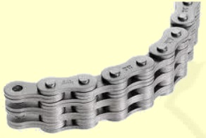
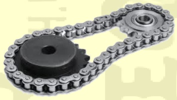
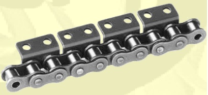

Łańcuchy Galla
Znaczna część naszej oferty to łańcuchy nietypowe, stosowane w przemyśle hutniczym, nictwie,
cukrownictwie, browarnictwie, transporcie, przetwórstwie drzewnym, papiernictwie i innych branżach:
- Łańcuchy do koparek KW 253, KU 103,2, KU 78,1 oraz do innych koparek;
- Łańcuchy ze stali nierdzewnej, kwasoodpornej wg zamówienia;
- Łańcuchy używane w przemyśle cukrowniczym: 65 MB2 - "kompleks", do dyfuzorów, łapaczy liści i inne;
- Łańcuchy podajnika węgla do kotłów;
- Łańcuchy do pasteryzatorów i inne dla browarnictwa;
- Łańcuchy do maszyn drogowych, budowlanych i rolniczych;
- Łańcuchy do tuneli chłodniczych;
- Łańcuchy do betoniarek o różnej pojemności;
- Łańcuchy ogniwowe techniczne i gospodarcze;
- Łańcuchy płytkowe niekatalogowane;
- Łańcuchy do pokrywek zgrzeblarkowych i inne do maszyn włókienniczych;
- Łańcuchy stosowane w przemyśle tytoniowym: do krajaczy bel, suszarni tytoniu;
- Łańcuchy i transportery stosowane w fabrykach kostki brukowej;
- Łańcuchy z rolkami z tworzyw sztucznych;
- Łańcuchy cynkowane galwanicznie i ogniowo;
- Ogniwa złączne do łańcuchów - proste, wygięte, specjalne;
- Koła łańcuchowe.


